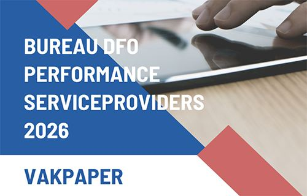

Gratis Vakpaper Serviceproviders onderzoek 2026
De uitkomsten van het DFO Performance Serviceprovider onderzoek 2025 zijn gebaseerd op 2.106 beoordelingen.
Aan het intermediair is gevraagd de ondersteuning door serviceproviders bij de verschillende activiteiten van hun kantoor te beoordelen. Zij hebben de belangrijkste serviceproviders die zij voor een activiteit inzetten beoordeeld op een aantal aspecten van dienstverlening. Serviceproviders worden in het rapport opgenomen als zij minimaal 25 beoordelingen hebben.
Artikelnummer 300343. Bestellen en betalen gaat via de webshop op dfobv.nl.
Omschrijving
Deze vakpaper wordt je aangeboden door
dewinnaars van 2026

Bereikbaarheid en doorlooptijd acceptatie bepalen waardering serviceproviders
Financieel adviseurs zijn over het algemeen zeer tevreden over de kwaliteit van de binnendienst en acceptatie bij serviceproviders. Vooral een goede bereikbaarheid en snelle acceptatieprocessen blijken bepalend voor hun waardering. Bovendien hangen deze factoren direct samen met een hogere Net Promoter Score (NPS) én een groter omzetaandeel. Dat blijkt uit het eerste Focusonderzoek Serviceproviders 2026 van Bureau DFO, gebaseerd op circa 850 beoordelingen van financieel advieskantoren in heel Nederland. In het onderzoek zijn 14 serviceproviders beoordeeld binnen de productgroepen hypotheken, consumptief krediet, particuliere schade en zakelijke schade.
| Lees hier ons persbericht Kijk ook eens op onze website Serviceproviders: hier vind je een gratis overzicht van veel Serviceproviders in de markt. Bekijk hier onze website Serviceproviders |